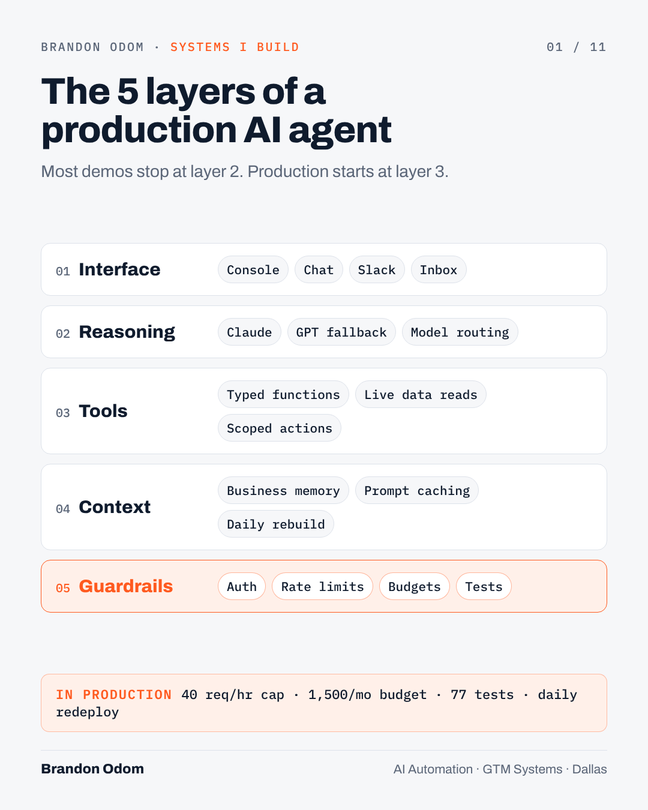
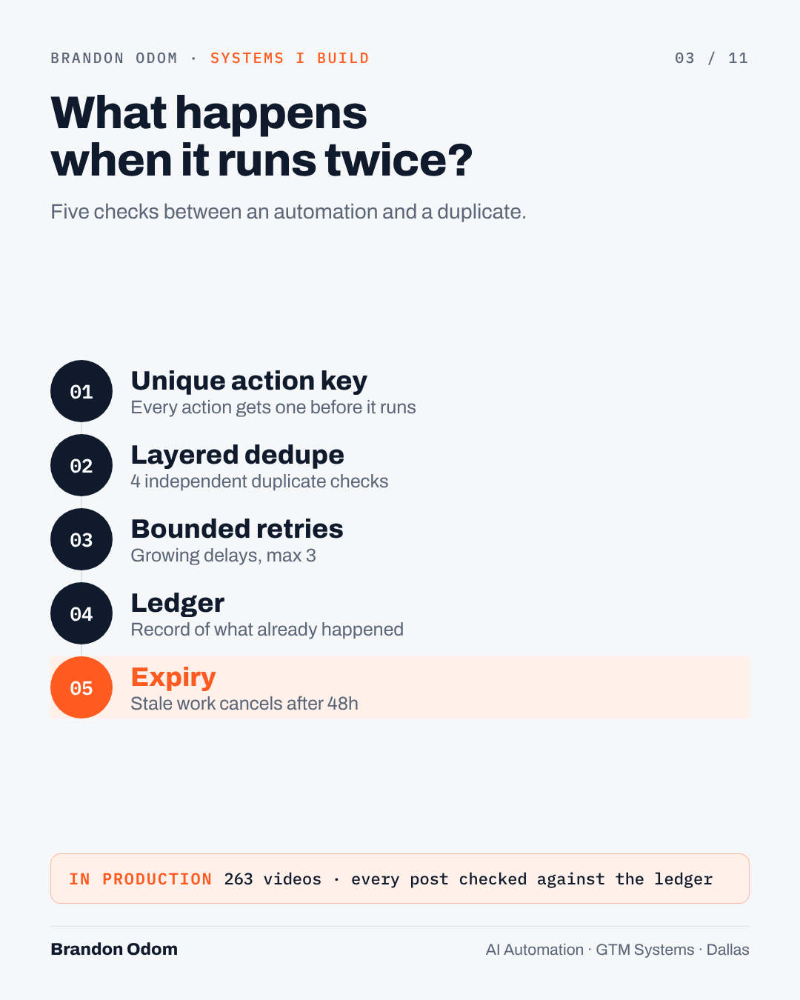
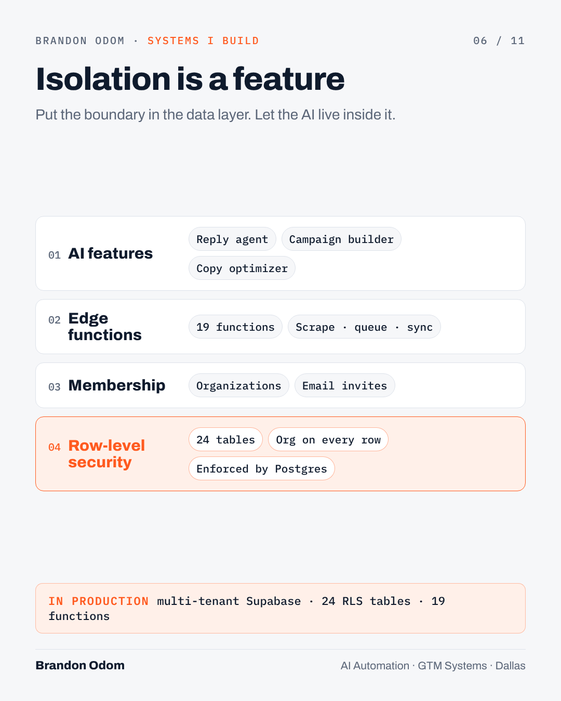
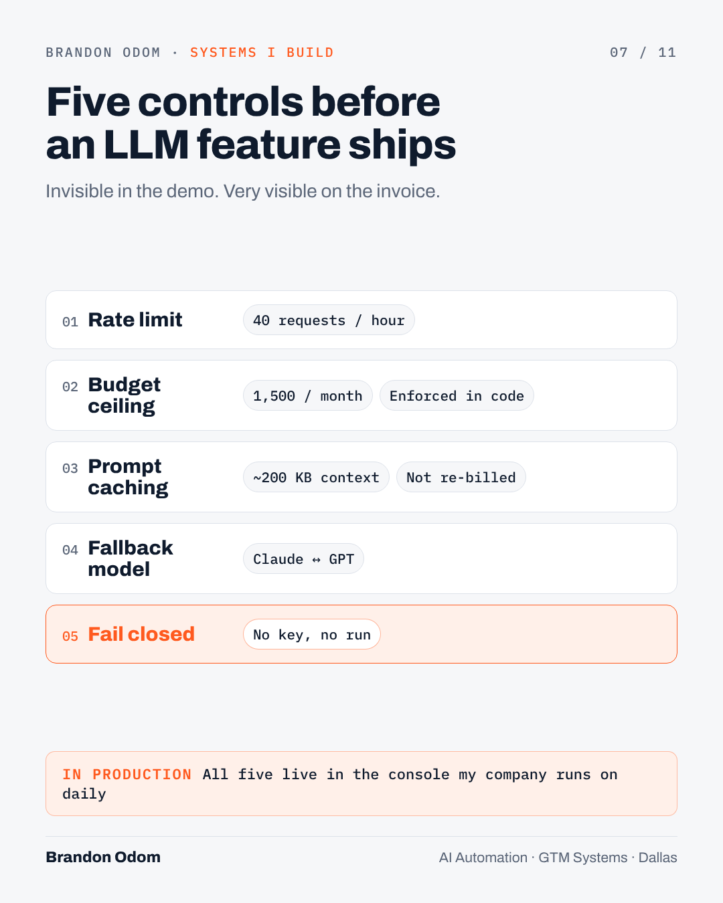
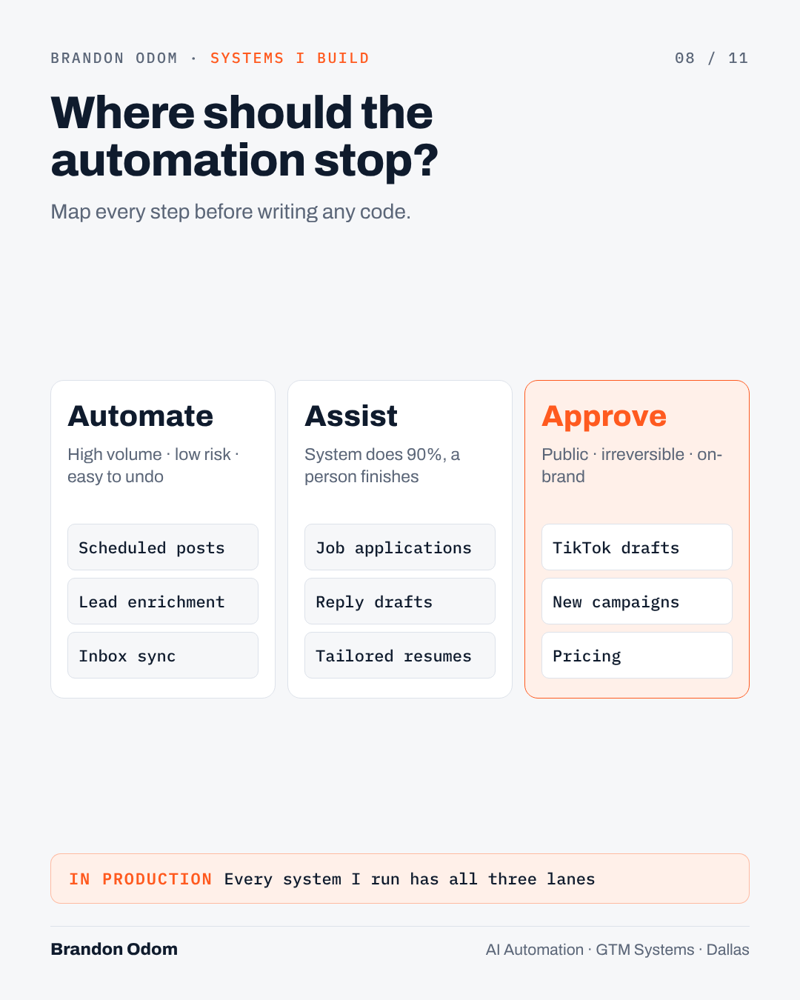
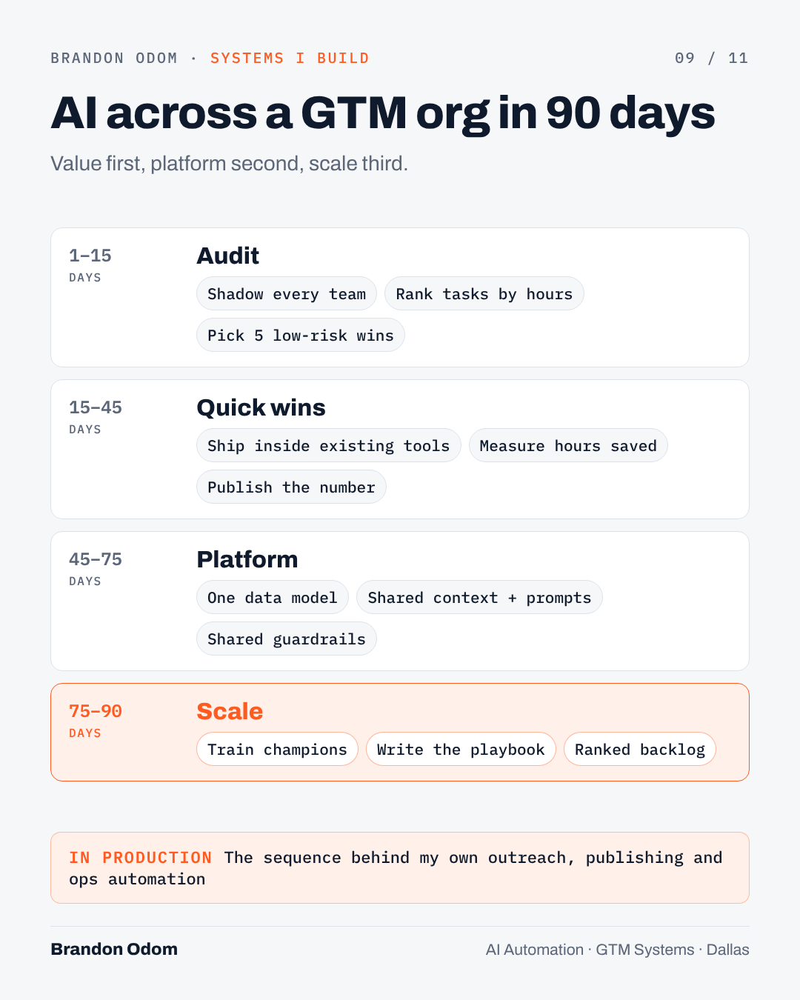
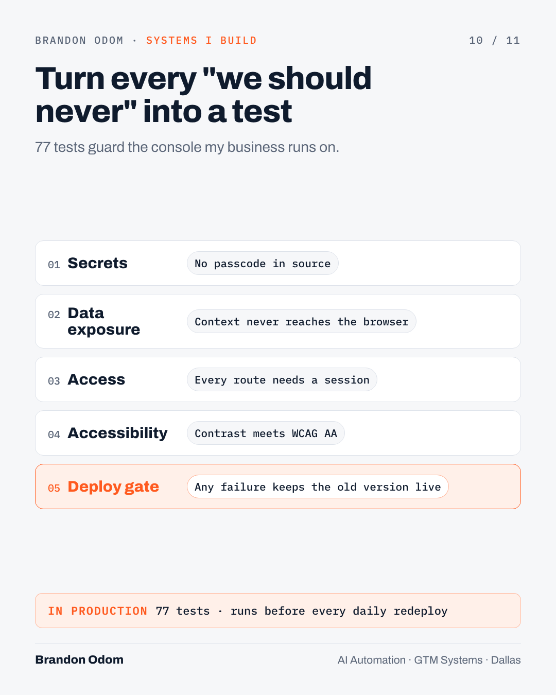
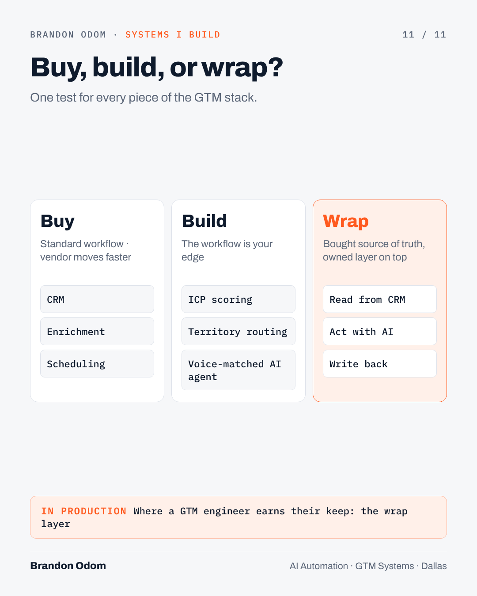

Senior-level posts on the kinds of systems you build: agents, GTM pipelines, reliability, multi-tenant SaaS, cost controls, scoring and rollout strategy. Each has a diagram, and three have animated dashboard videos built from your real numbers.

01Image1,076 characters
The 5 layers of a production AI agent
Most "AI agents" are a prompt and a hope.
The ones that survive contact with a real business have five layers. I build every agent against this checklist:
1. Interface: where people actually work. Chat, Slack, a console, an inbox.
2. Reasoning: the model, plus routing. Which model for which job, and what happens when one is down.
3. Tools: the agent reads live data and takes actions through narrow, typed functions. Never raw database access.
4. Context: what the agent knows about the business, cached so you don't pay to resend it on every call.
5. Guardrails: auth, rate limits, budgets, logging and tests.
In production for me: an operations console my company runs on every day. Claude answers questions by calling tools against live business data, keeps roughly 200 KB of business context cached, is capped at 40 requests an hour and 1,500 a month, and rebuilds itself every morning after 77 tests pass.
The model is the easy part. Layers 3 to 5 are where agents earn trust.
Which layer do teams skip most often in your experience?
#AIAgents #AIEngineering #GTM
Every GTM team has the same six-stage machine, whether they've drawn it or not:
Signals → Enrich → Score → Route → Engage → Learn
Most teams buy a tool per stage and the handoffs between them are where pipeline leaks. The fix isn't another tool. It's owning the data model that runs through all six.
What that looked like when I built our outreach system:
• One database as the source of truth, with each client organization isolated at the row level
• Leads pulled in and enriched automatically
• Sequenced outreach from a queue, so nobody gets contacted twice
• A Claude agent that reads replies and drafts or sends the answer
• A weekly job that reviews which messages earned replies and rewrites the copy
The numbers it runs on today: 31,195 industry contacts loaded, 2,584 leads in pipeline, 22 campaigns, 19 serverless functions.
The Learn stage is the one most teams never close. If your outreach copy is the same as it was last quarter, the loop is open.
#GTMEngineering #RevOps #AIAutomation

03Image1,069 characters
What happens when it runs twice?
The least glamorous skill in AI automation is the one that decides whether you get trusted with production: making sure the same action never happens twice.
Automations retry. Networks drop. Schedulers fire late and then fire again. Without protection, that means a prospect gets the same DM twice, a customer gets two invoices, a video posts twice.
What I build into every queue:
1. A unique key for every action, checked before it runs
2. Duplicate checks at more than one layer, because one always gets bypassed eventually. My outreach queue checks four.
3. Retries with growing delays, capped (mine stop at 3)
4. A ledger of what already happened, stored next to the code
5. Stale work expires instead of firing late (48 hours in my queue)
The publishing pipeline I run commits its ledger back to the repository after every run. 263 videos published, each one checked against that ledger before it goes out.
If you're evaluating an automation vendor or a candidate, ask one question: what happens when this runs twice?
#AIAutomation #SystemsDesign #Reliability
You don't need a server to run a production pipeline. You do still need architecture.
One of my systems publishes short-form video to Instagram and YouTube on a schedule. It has no server, no database host and no monthly infrastructure bill. It's a scheduled GitHub Actions job:
• Wakes every hour
• Reads a dated content calendar
• Works out what's due in Central time and caps posts per run so a backlog never floods the feed
• Waits through the platform's processing errors instead of failing on the first one
• Commits a ledger of what posted back to the repo, so every run knows what the last one did
263 videos published across five content series, with no one pressing a button.
The lesson that transfers to any company: put the state somewhere you can read, diff and roll back. For a small system that's a file in git. For a big one it's a table with an audit log. Either way, never let the automation's memory live only inside the automation.
#Automation #DevOps #ContentOps
If a sales rep can't explain why an account scored 82, they won't work it.
That's why I build explainable scoring before I reach for a model. Weighted criteria, visible reasons, and a number a human can argue with.
Two scoring systems I run:
• Grant Radar ranks funding opportunities across 8 weighted criteria and shows the reason behind every score.
• A job-matching engine scans 61 company job boards every morning, screens about 8,700 open roles, scores each one 0 to 100 on fit, and tailors a resume to every match.
Same pattern both times:
1. Define what "good" looks like as weights the business agrees on
2. Score every record the same way
3. Show the reasons next to the number
4. Review the misses weekly and adjust the weights
An ML model can come later, once you have labeled outcomes. Most GTM teams don't, and an explainable score gets adopted while the black box gets ignored.
#RevOps #GTMEngineering #AI

06Image828 characters
Isolation is a feature
The first question an enterprise buyer asks about an AI tool isn't about the AI. It's "can another customer ever see my data?"
When I built our outreach platform, I made the answer architectural instead of procedural:
• Every table carries the organization it belongs to
• Row-level security in Postgres enforces it on all 24 tables, so isolation holds even when application code has a bug
• 19 serverless edge functions handle scraping, queueing, inbox sync and the AI features
• New users join an organization through emailed invites
The AI pieces, the reply agent and the campaign builder, are built on top of that foundation, not beside it.
That's the design principle I'd bring into any company rolling out AI: put the security boundary in the data layer, then let the AI live inside it.
#AIEngineering #SaaS #Security

07Image842 characters
Five controls before an LLM feature ships
An AI feature without a budget is a liability with a nice demo.
Five controls I put on every LLM feature before anyone outside my team touches it:
1. Rate limits. Mine: 40 requests an hour.
2. A monthly ceiling the system enforces on its own: 1,500 calls.
3. Prompt caching for the big, stable context, so roughly 200 KB of business knowledge isn't re-billed on every question.
4. A fallback model, so one provider's outage isn't your outage.
5. Fail closed. If a key or passcode is missing, the feature refuses to run instead of running open.
None of this is visible in a demo. All of it is visible on the invoice and in the incident report.
If you're the person approving AI spend, ask your team which of these five they have. If the answer is "we'll add them later," later usually arrives as a surprise bill.
#AI #FinOps #AIGovernance

08Image858 characters
Where should the automation stop?
The most important design decision in an automation is where it stops.
I sort every step into one of three lanes:
Automate: high volume, low risk, easy to undo. Publishing a scheduled post. Enriching a lead. Syncing an inbox.
Assist: the system does 90% and a person finishes. My job-application assistant opens each role, fills every field and attaches a resume tailored to that posting. I solve the captcha and press Submit.
Approve: anything public, irreversible or brand-defining waits for a human. My TikTok publishing is built to land videos in drafts for review instead of going live.
Teams get this wrong in both directions. Automate too little and nobody gets their time back. Automate too much and one bad run reaches every customer at once.
When I scope an AI project, this map comes before any code.
#AIStrategy #Automation #HumanInTheLoop

09Image981 characters
AI across a GTM org in 90 days
If I were rolling out AI across a 200-person GTM org, here's the 90-day plan I'd run.
Days 1–15: Audit. Shadow reps, marketers and ops. List every repetitive task with its weekly hours. Pick the five with the most hours and the least risk.
Days 15–45: Quick wins. Ship those five as small, owned automations inside the tools people already use. Measure hours saved. Publish the number.
Days 45–75: Platform. Consolidate what worked onto shared foundations: one data model, one place for prompts and context, one set of guardrails for cost, access and logging.
Days 75–90: Scale and enable. Train champions on each team, write the playbook, and hand over a backlog ranked by hours saved.
The order matters. Platform-first rollouts stall because nobody has felt the value yet. Quick-wins-only rollouts sprawl because nothing is shared.
It's the same order I've followed automating my own companies: outreach, publishing, operations, scoring.
#AITransformation #GTM #Enablement

10Image797 characters
Turn every "we should never" into a test
Policies in a doc get forgotten. Policies in a test suite get enforced on every deploy.
The AI console I run my business from has 77 automated tests. A lot of them aren't testing features. They're testing promises:
• No passcode or secret ever appears in source code
• The 200 KB business-context bundle never reaches the browser
• Every route requires a signed session
• Text meets accessibility contrast standards
If any of those breaks, the morning rebuild stops and the old version keeps running.
This is the habit I'd push hardest on any team shipping AI: turn each "we should never" into a test. Security reviews get faster, onboarding gets safer, and nobody has to remember the rules.
What's one rule your team keeps in a doc that should be a test?
#AIEngineering #Testing #Governance

11Image924 characters
Buy, build, or wrap?
Clay, Salesforce, a sequencer, an enrichment API, or build it yourself?
I've worked both sides, and I use one test for every piece of the GTM stack:
Buy it when the workflow is standard and the vendor's roadmap will outrun yours. CRM, enrichment, calendar booking.
Build it when the workflow is your advantage, or when the glue between tools is where the value leaks. Scoring your specific ICP. Routing that knows your territories. An AI agent that answers in your voice using your data.
Wrap it when you need both: keep the bought system as the source of truth and build a thin, owned layer on top that reads from it and writes back to it.
Most of what I build lives in that third box. It's also where a GTM engineer earns their keep, because it's the part no vendor will ever build for you.
What's one tool in your stack you'd rip out if you could build the piece you actually use?
#GTMEngineering #Salesforce #Clay